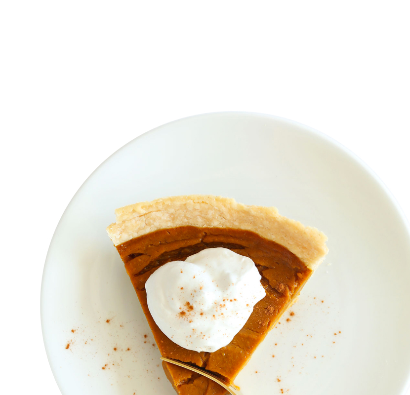

Pumpkin pie is a sweet dessert pie with a spiced, pumpkin-based custard filling. The pumpkin is a symbol of harvest time, and pumpkin pie is often eaten during the fall and early winter.

September
Pumpkin pie